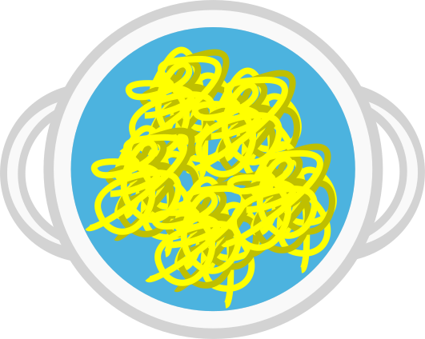
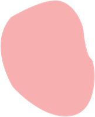
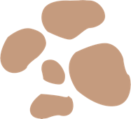

Press space to put some salt
If salt and other spices are not enough to bring out the flavor of foods, what should to be added next?
Click to test the doneness of the pasta!
True or False: A general rule to check if a fish is cooked is to check its texture.
Press space to cut. Don't cut your fingers!
Cutting: This position protects your fingertips by curling them inwards, using your knuckles to guide your knife.
Click the meat when it is done
True or False: A good tip to save time is to clean at the end and focus on cooking.
1. First get the chicken!
 True or False: Uniform distribution of ingredients is one of the key objectives of mixing.